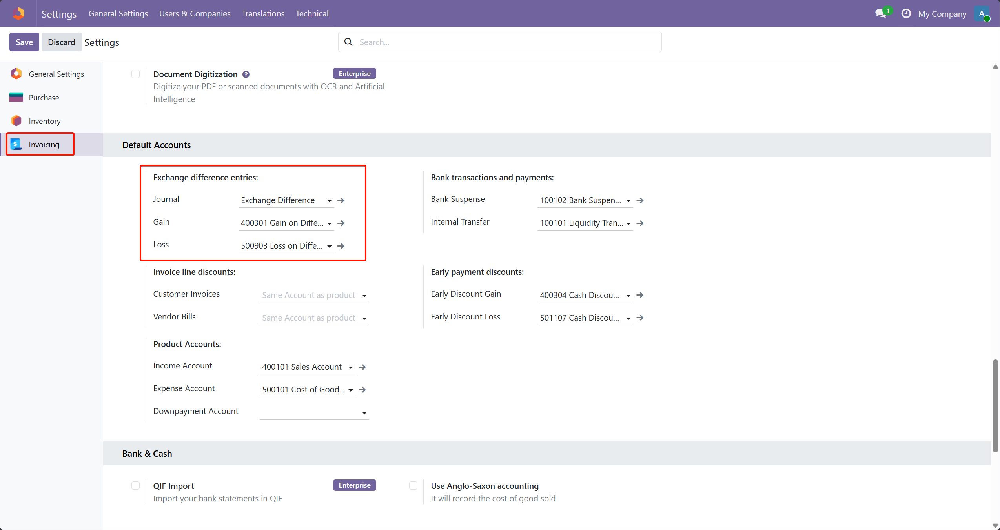
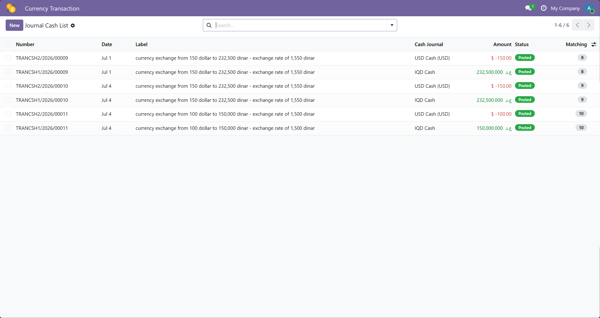
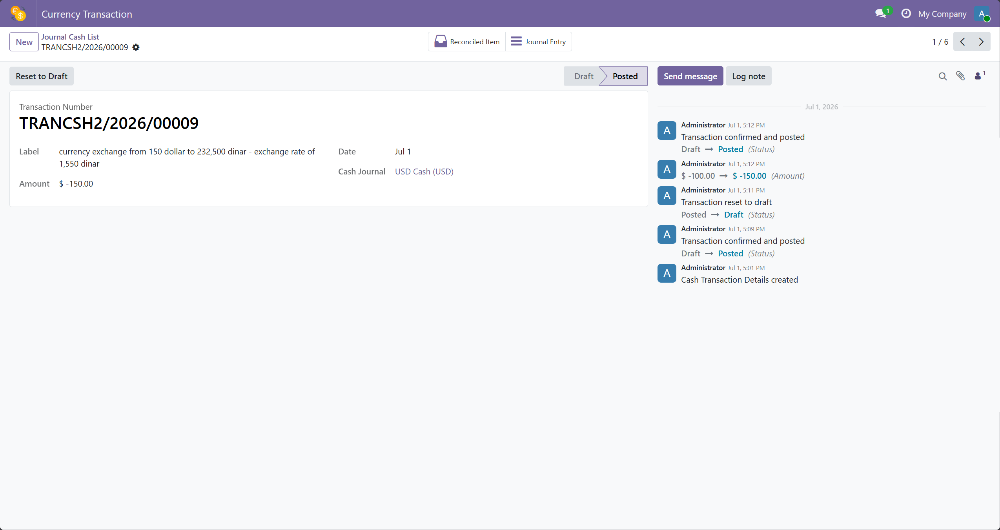
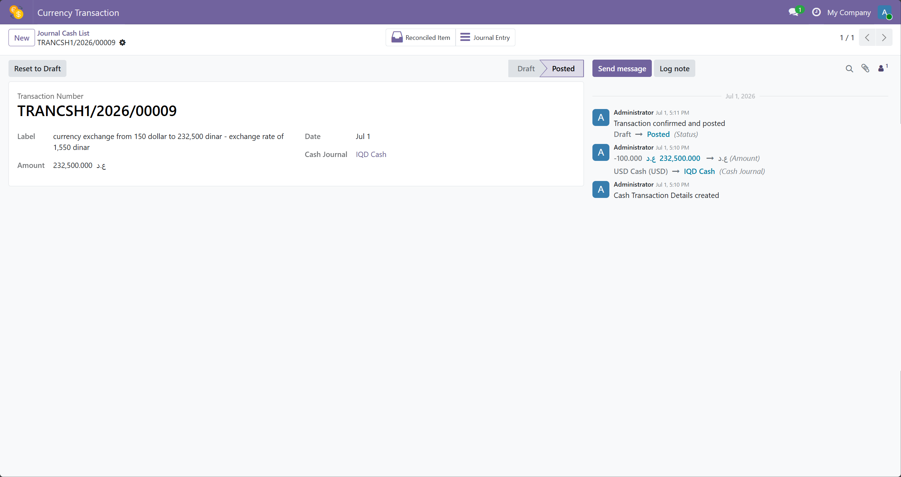
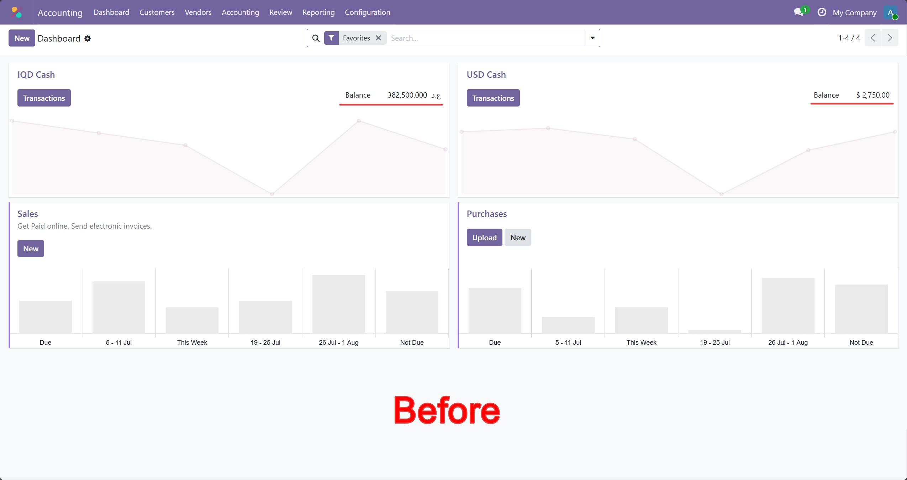
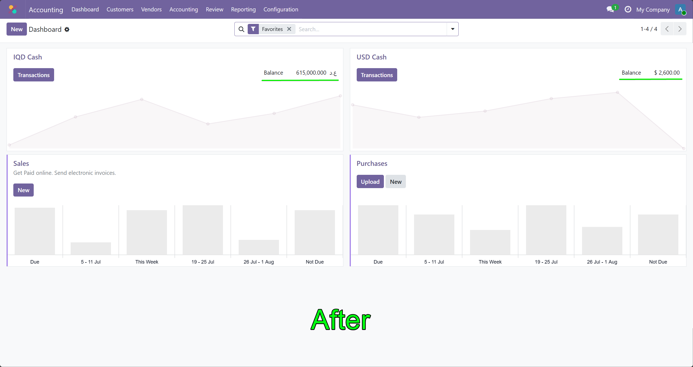
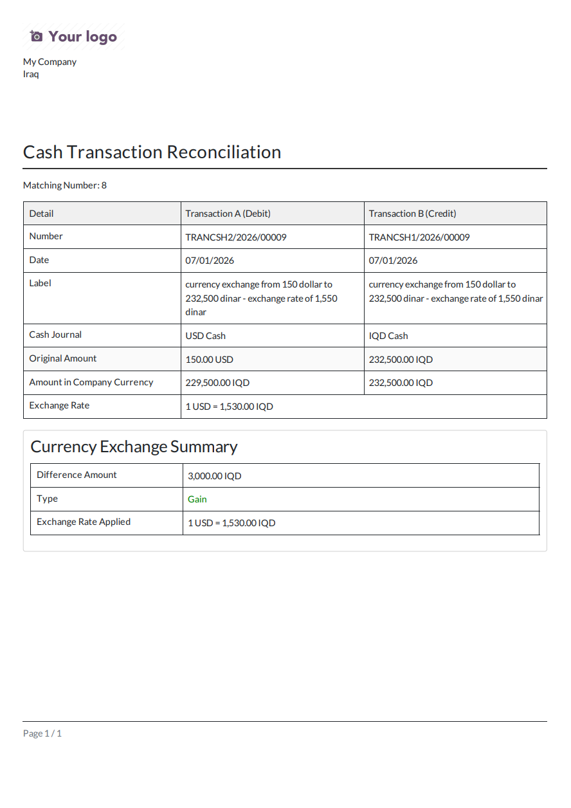

Under the "Default Account" you need to set the journal exchange and the gain and loss account

View all cash transactions with details including transaction number, date, label, cash journal, amount, and status.
Automatic matching pairs debit and credit entries from currency exchanges for easy reconciliation.
Posted transactions are securely recorded with full audit trail in the chatter.


Manage USD currency exchange transactions with a dedicated form view. Track exchange rates, select source and destination journals, and record amounts with automatic debit/credit matching.
Handle IQD currency exchange transactions with the same intuitive interface. Supports multi-currency reconciliation, automatic exchange gain/loss calculation, and full audit trail.




Comprehensive transaction report clearly displaying both sides of a currency exchange - debit (source) and credit (destination) entries with original amounts, company currency equivalents, applied exchange rates, and automatically calculated exchange gains or losses.